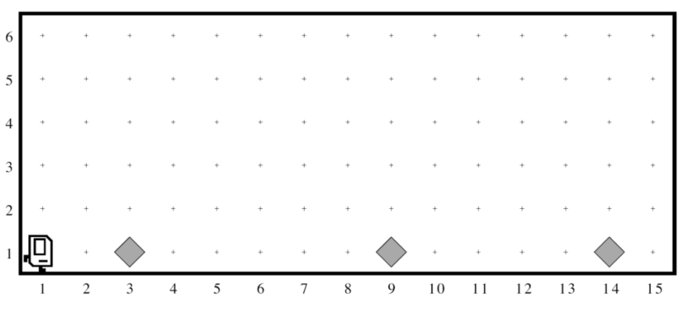
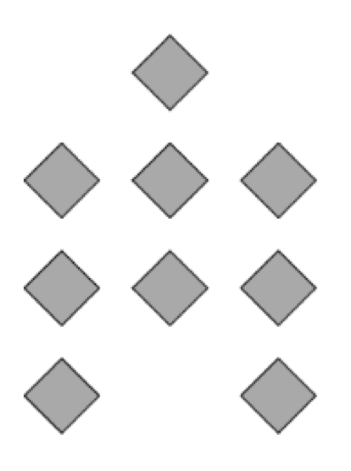

Abschnitt Handout 1¶
Karel der Vereinten Nationen¶
Im Rahmen ihrer Pläne, den weltweiten Wiederaufbau der Infrastruktur zu unterstützen, haben die Vereinten Nationen - das ist richtig, die UN nutzen Karel - ein neues Programm mit dem Auftrag eingerichtet, Hausbauroboter zur Reparatur von Hochwassergebieten zu entsenden.
Ihre Aufgabe ist es, diese Roboter zu programmieren.
Jeder Roboter beginnt am westlichen Ende einer Straße, die folgendermaßen aussehen könnte:
{kind=link}
Jeder Piepser in der Abbildung repräsentiert einen Trümmerhaufen. Karels Aufgabe ist es, die Straße entlang zu gehen und an den von jedem Piepser markierten Stellen ein neues Haus zu bauen. Darüber hinaus müssen diese Häuser auf Stelzen errichtet werden, um Schäden durch die nächste Flut zu vermeiden. Tatsächlich sollte jedes Haus genau wie auf dem Bild unten aussehen:
{kind=link}
Das neue Haus sollte an der Stelle zentriert sein, an der die Trümmer zurückgelassen wurden. Dies bedeutet, dass das erste Haus im obigen Diagramm mit dem linken Rand entlang der 2nd Avenue gebaut wird. Am Ende des Laufs sollte Karel am östlichen Ende der Straße sein und eine Reihe von Häusern erstellt haben, die für die gezeigten Anfangsbedingungen so aussehen:

Beachten Sie die folgenden Informationen über die Welt:
Karel beginnt bei (1, 1) mit einer unendlichen Anzahl von Pieptönen in seiner Piepsertasche nach Osten zu schauen.
Die Piepser, die die Positionen angeben, an denen Häuser gebaut werden sollen, sind so beabstandet, dass Platz zum Bauen der Häuser vorhanden ist, ohne dass sich Wände überlappen oder treffen.
Karel muss an der südöstlichen Ecke der Welt nach Osten schauen. Außerdem sollte Karel nicht gegen eine Mauer stoßen, wenn er ein Haus baut, das bis in diese letzte Ecke reicht.
Schreiben Sie ein Programm zur Umsetzung des Karel-Projekts der Vereinten Nationen. Denken Sie daran, dass Ihr Programm für jede Welt funktionieren sollte, die die oben genannten Bedingungen erfüllt.